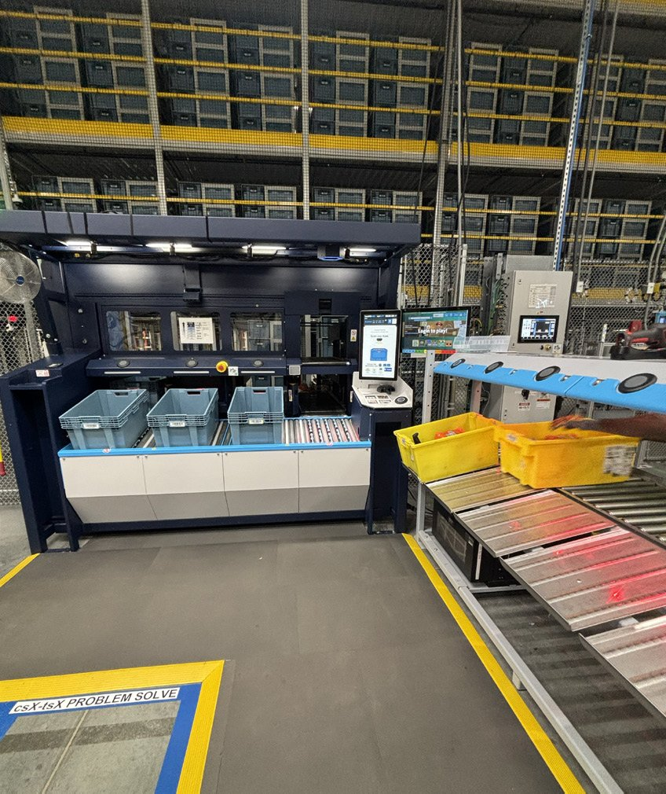
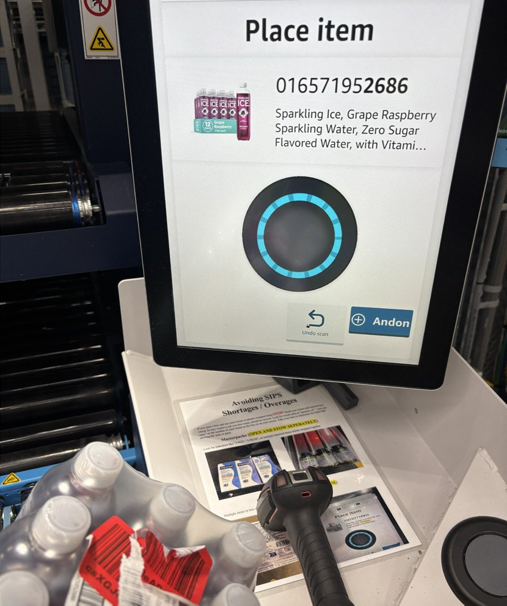
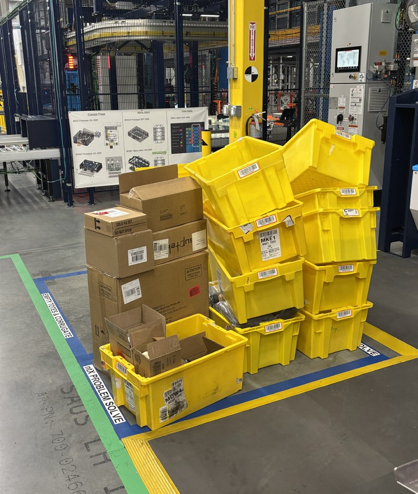
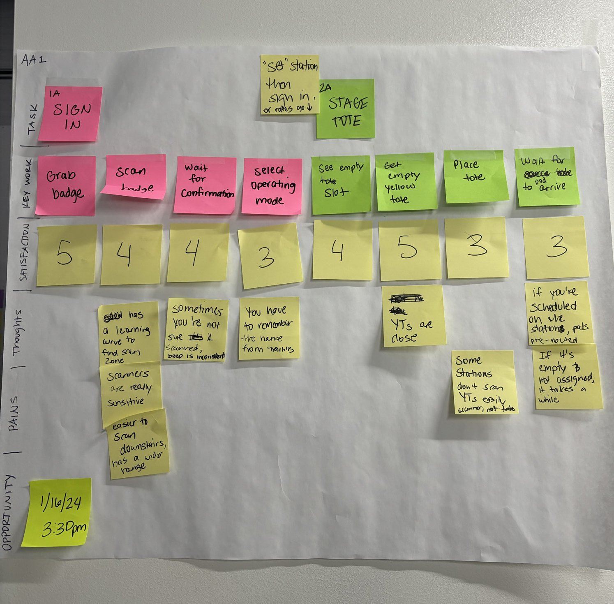
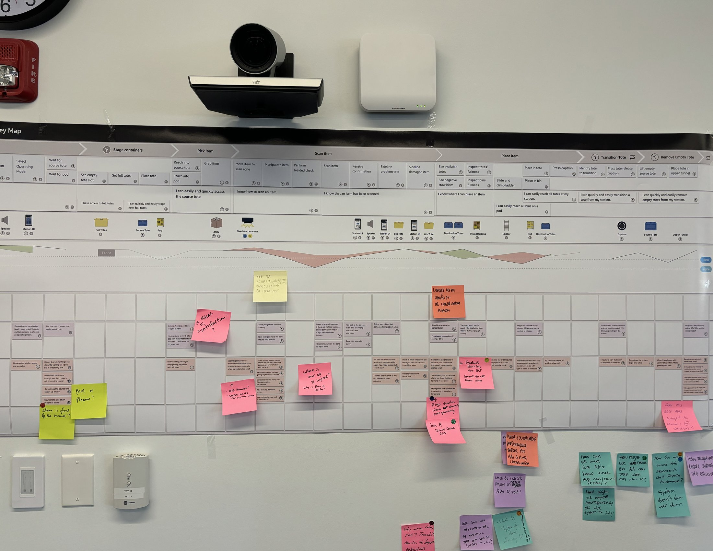
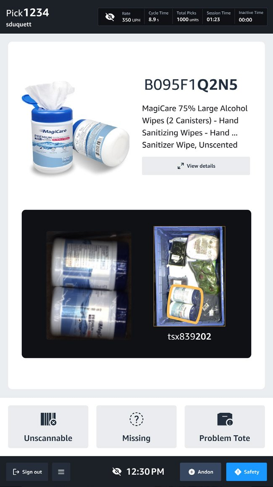
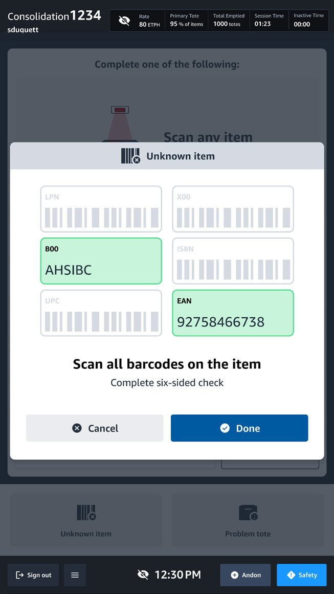
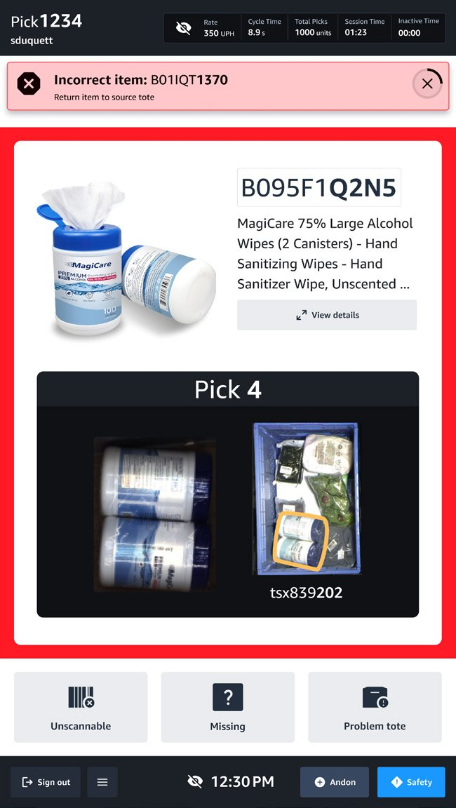
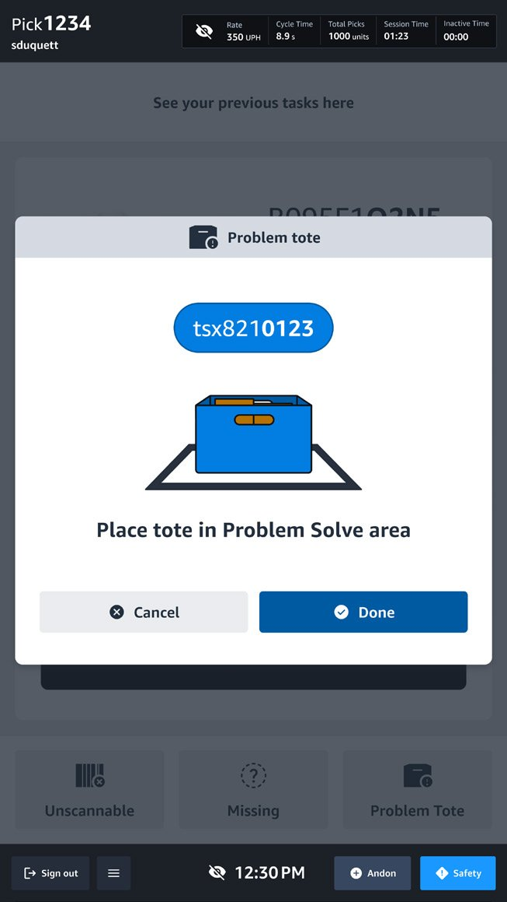

Designing for operators in high-volume warehouse systems.
ToteASRS is Amazon Robotics' automated inventory storage and retrieval system. The robots handle retrieval — but humans are still required to pick, scan, and recover from every workflow exception.
Role
Senior UX Lead — sole UX on workstream
Team
Software, hardware, ops, program
Timeline
2023 – 2025 · Launched October 2025
The context
After initial launch in 2023, small inefficiencies compounded into measurable operational impact to throughput and inventory quality.
Environment
Fast-paced fulfillment centers with handheld devices, time pressure, and constant physical movement.
Users
Frontline associates executing repetitive tasks for 10+ hours a day across rotating shifts.
Constraints
Hardware limitations, strict performance metrics, and an aggressive launch schedule that challenged a user-centered design process.

Environment — live FC floor

Users — frontline associates

Constraints — fixed hardware
The friction
Operators were navigating fragmented task flows with limited visibility into system state. The combined friction was preventing the program from achieving General Availability for its 2026 launch dates.
Ambiguous error feedback
Misaligned task progression logic
Delayed system responses
Increased rework under time pressure
Field research across distributed facilities
I designed the research to capture both system and human errors at scale, focused on what happens during repetitive workflows that simple usability tests miss.
200+ contextual interviews with operators across rotating shifts and process paths.
On-floor shadowing under live operational conditions to capture human responses in real-time.
Moderated usability testing on prototyped UI changes before any code shipped.
Cross-site pattern synthesis to separate site-specific from systemic friction.

Synthesis from on-floor research — mapped to highlight realistic human actions inside what we call "simple" processes, and where repetition slows people down or injects errors.
Mapping the workflow end-to-end
Rather than focusing on isolated usability issues, I mapped end-to-end task flows across human, device, and backend system interactions — and made the exception branches first-class citizens of the map.
Sign inStage active toteSingulate itemScan itemPlace in chute
Journey maps from the field were then used in working sessions to educate stakeholders on the current UX — and to gain alignment on feature prioritization for both next-generation hardware and near-term software updates.

The pick-station journey map after a working session — the artifact that turned research findings into a shared prioritization tool with product, engineering, and operations.
Time-and-motion baseline
Every redesign decision was anchored in a measurable cost. The pick cycle baseline:
Pick
Scan
Place
Confirm
Wait
Transition
12.9sAvg. time, single pick cycle
The time data pointed to where the cycle was leaking — which task steps consumed disproportionate seconds and were therefore worth redesigning. The qualitative data from contextual interviews explained how each of those steps could actually be improved.
Designing within constraints
Given fixed hardware and legacy architecture, the redesign followed a strict set of rules — every change had to clarify state, reduce decision complexity under time pressure, and stay within the existing software architecture.
Clarifying task state hierarchy
Prioritizing error alerts by severity
Introducing earlier feedback loops
Reducing decision complexity under time pressure
Aligning digital structure with operator mental models

Pick — product identifiers + scanned barcodes

Consolidation — multi-barcode scan
Designing for failure
Instead of optimizing only for happy-path tasks, I prioritized designing for failure points — reducing cognitive strain and preventing the downstream rework that compounds across a shift.
Early error detection
Clear recovery pathways
Escalation visibility
Reduced ambiguity in blocked states

Scan error — severity-coded recovery

Problem reporting — explicit recovery path
Design for failure before success. In high-volume operational systems, the cost of an unclear error state is paid every shift, every station, every operator.
Measuring impact
I defined quantitative metrics tied to each task-flow step and qualitative interview questions to collect feedback across the four sites — validating the new UI's effectiveness against the same baselines the program was launched on.
Metric
What we measured
Task error rate
Operator errors per shift across the 11 redesigned task-flow steps.
Task completion time
Average per-cycle time across pick, scan, place, and transition steps.
Problem-solve labor hours
Daily total hours spent recovering from sidelined and mis-handled items downstream of the station.
User performance rate
Operator throughput against the target units-per-hour rate for the program.
Each metric was instrumented before launch — every shipped change had a measurable success signal in production, paired with qualitative interview data from the same four sites.
Systems impact
In October 2025, the new UI for all 11 workflows was released to over 800 stations across four U.S. fulfillment centers.
−17%
Reduced task error rate
−14%
Improved task completion time
−80%
Decreased problem-solve labor hours
+10%
Increased user performance rates
The ToteASRS redesign also became the baseline for UI improvements to other workstations with similar workflow tasks — the legacy Pick Station saw a 4% performance lift, and the Inventory Induct Station saw +7% performance with 3.5 hours/day of problem-solve labor eliminated.
The same pattern, applied to other workstations
Once ToteASRS validated the patterns in production, two other stations adopted the same multi-barcode scan, severity-coded error, and explicit-recovery UI conventions: